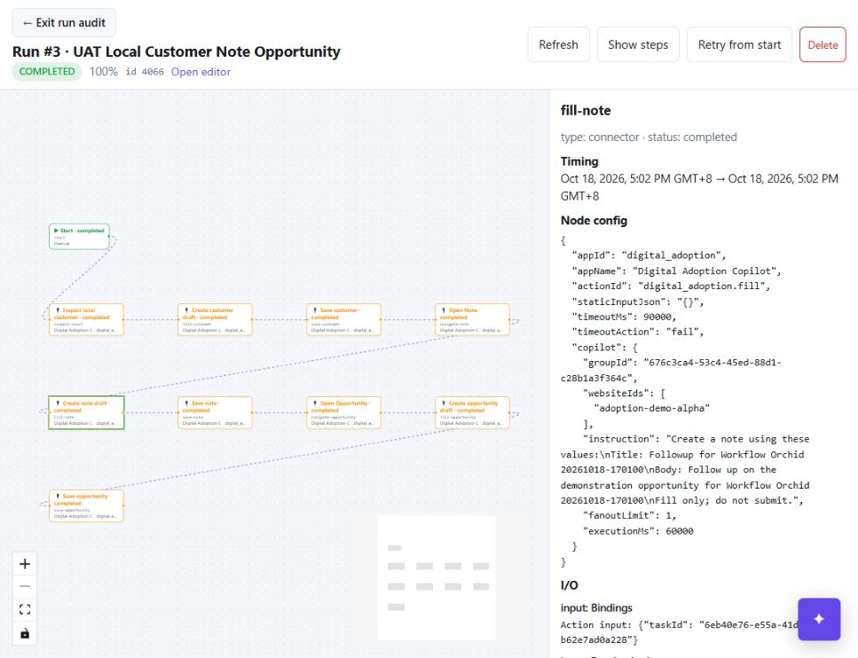
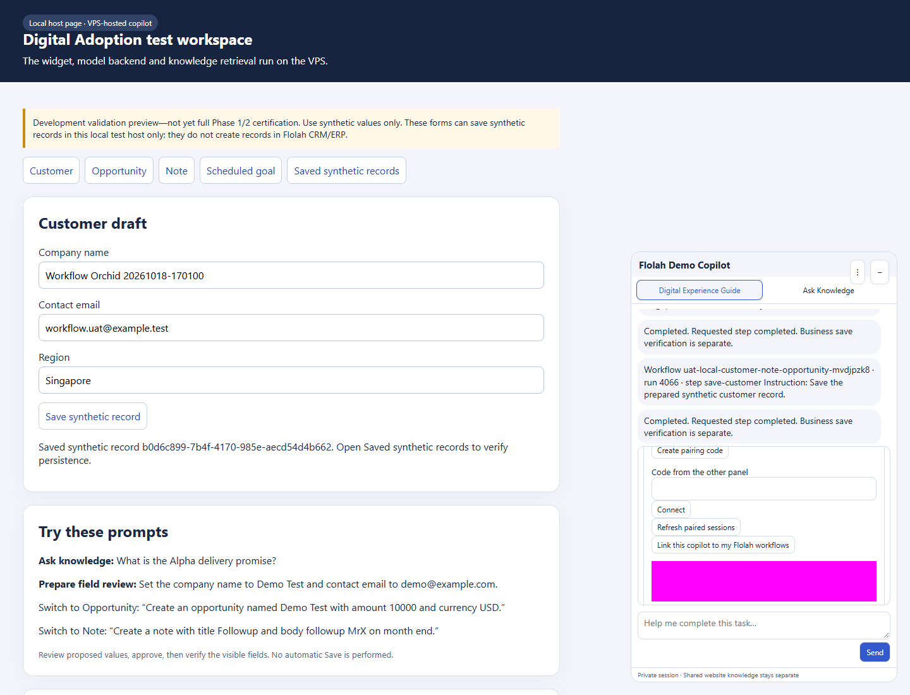
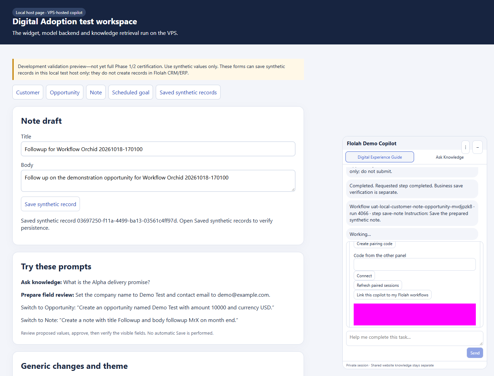
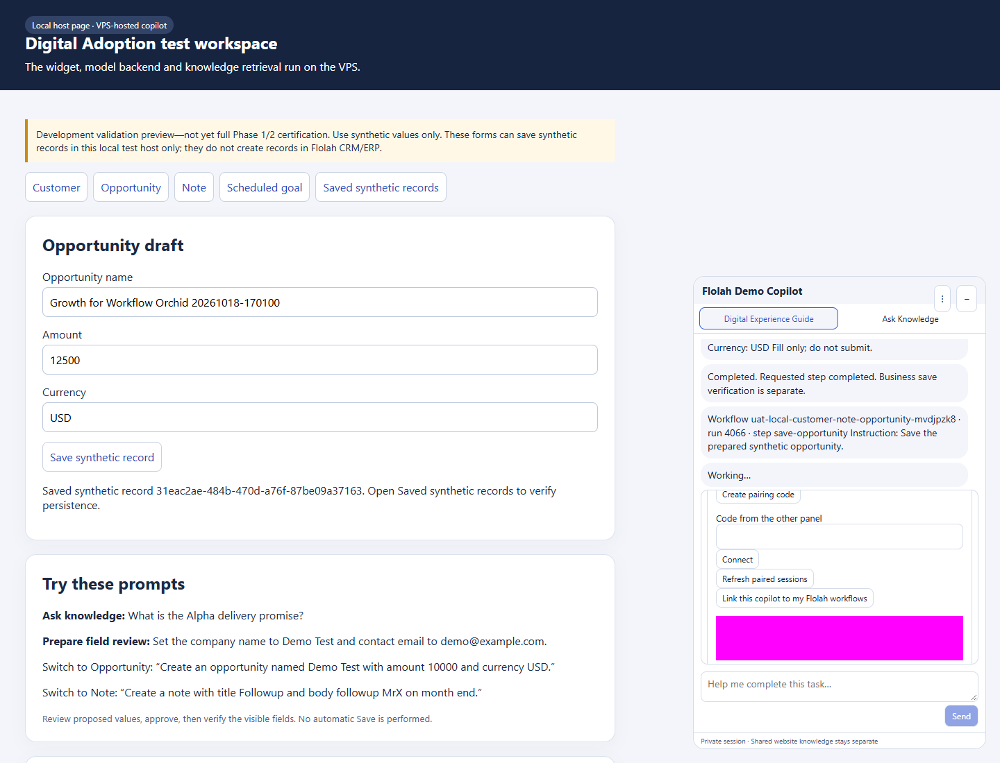
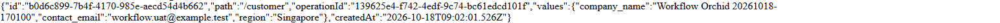
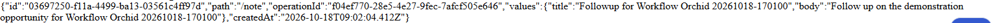
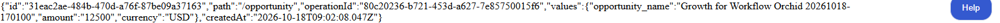
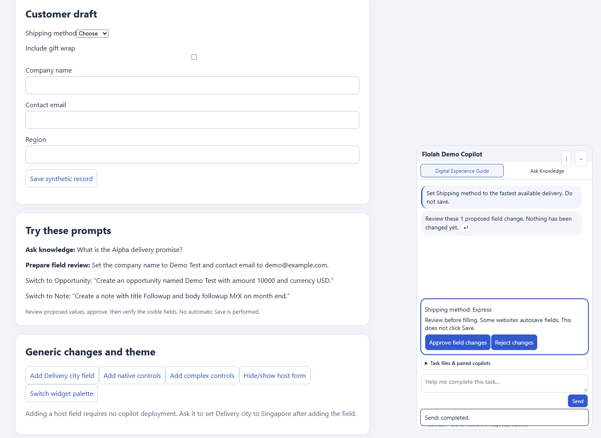
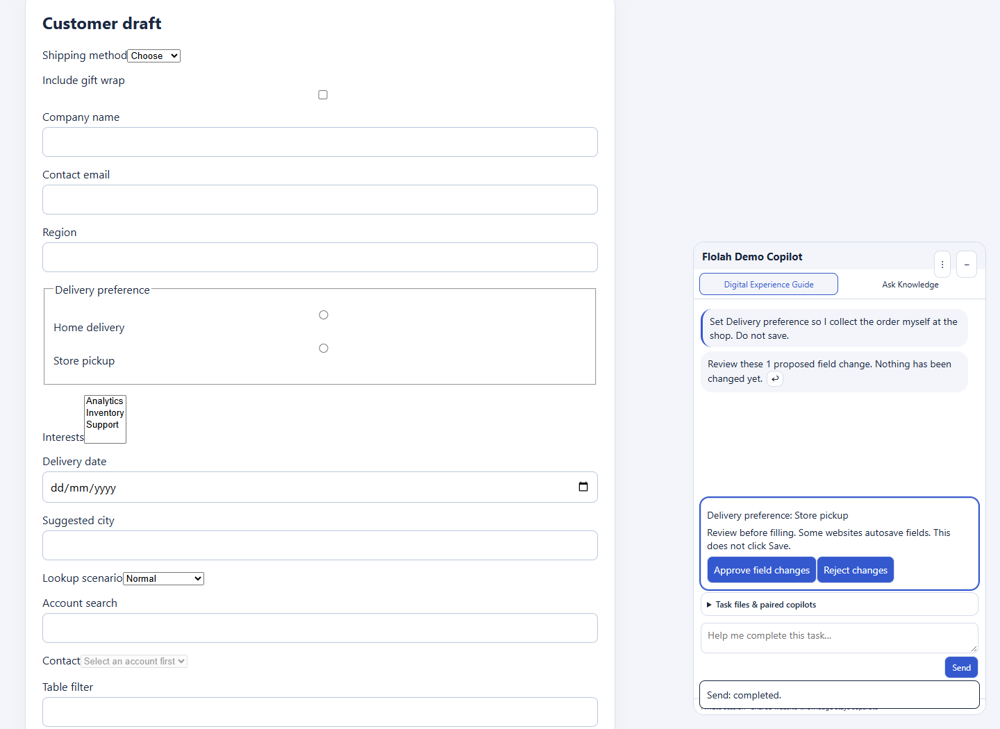
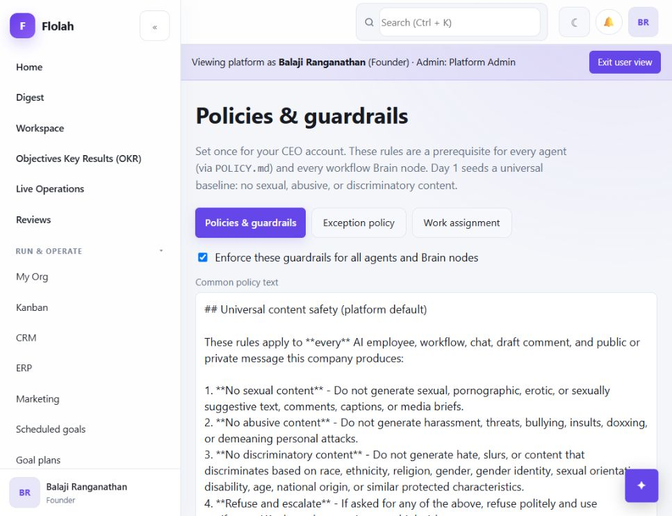

Incremental intent, workflow Save and private-status closure. Public flolah.cloud without login and loopback-only local fixture. No public host submission or laptop exposure. This is not full Phase 1/2 certification.
29 passed · 1 partial · 0 failed current cases; 240/240 checks locally and in the VPS image.
Run 4066: all 10 nodes completed; three independent persisted records verified; zero temporary grants remain.
Immutable prior report ../intent-workflow-20261018/index.html records the earlier failed run 4064. Run 4065 saved Customer, then exposed a Note navigation bug. Those attempts are not counted as current passes; the complete retest is run 4066.
Full Phase 1/2 still has prior Safari/iOS, Android, screen-reader and broader sustained-load/HA/fresh onboarding coverage gaps. This report closes the specified three-form save journey and representative intent cases only.
Visitor approval: Prepare proposal → visitor Approve field changes → validated fill; explicit Save is separate.
Workflow approval: Current Action Policy authorizes each effect → server approves the matching validated proposal → browser executes. Run 4066 used a temporary three-use fill grant and three exact owner-bound Save nodes under internal-write policy.
Live run 4066 · Structured report · CSV table · Independent records · Grant cleanup · Published workflow · Historical attempt
| Case | Status | Observed evidence | Recommendation | Release / screenshots |
|---|---|---|---|---|
| I01_DEFAULT_ALL_TRANSPORT Keep the transport default All transport. Do not submit. | passed | transport: All transports Review before filling. Some websites autosave fields. This does not click Save. Approve field changesReject changes | Retain this generic observed-control regression; expand independent language and ambiguity evaluations. | 20261018-agentic-j Screenshot |
| I02_MISSPELLED_FIELD Set tranpsort to sse. Do not submit. | passed | transport: sse Review before filling. Some websites autosave fields. This does not click Save. Approve field changesReject changes | Retain this generic observed-control regression; expand independent language and ambiguity evaluations. | 20261018-agentic-j Screenshot |
| I03_NATIVE_MIXED_INTENT Set Shipping method to expres and select Include gift wrap. Do not save. | passed | Shipping method: Express Include gift wrap: Selected Review before filling. Some websites autosave fields. This does not click Save. Approve field changesReject changes Applied through visitor review; independent host controls read express and checked. No Save. | Retain this generic observed-control regression; expand independent language and ambiguity evaluations. | 20261018-agentic-j Screenshot Screenshot |
| I04_RECOMMEND_WITHOUT_FILL Recommend which transport to use for browsing all integrations. Do not change anything. | passed | Recommend which transport to use for browsing all integrations. Do not change anything. For browsing all integrations, I recommend using the 'All transports' option. This choice allows you to access all available transport methods, which is beneficial for comprehensive browsing.↩ | Retain this generic observed-control regression; expand independent language and ambiguity evaluations. | 20261018-agentic-j Screenshot |
| I05_UNKNOWN_CHOICE_CLARIFICATION Set Shipping method to Teleportation. Do not save. | passed | Set Shipping method to Teleportation. Do not save. The requested shipping method 'Teleportation' is not available in the observed choices. The available options are 'Choose', 'Standard', and 'Express'. Would you like to select one of these options instead?↩ | Retain this generic observed-control regression; expand independent language and ambiguity evaluations. | 20261018-agentic-j Screenshot |
| I06_COMPARATIVE_INFERENCE Set Shipping method to the fastest available delivery. Do not save. | passed | Shipping method: Express Review before filling. Some websites autosave fields. This does not click Save. Approve field changesReject changes | Retain this generic observed-control regression; expand independent language and ambiguity evaluations. | 20261018-agentic-j Screenshot |
| I07_RADIO_SEMANTIC_INFERENCE Set Delivery preference so I collect the order myself at the shop. Do not save. | passed | Delivery preference: Store pickup Review before filling. Some websites autosave fields. This does not click Save. Approve field changesReject changes | Retain this generic observed-control regression; expand independent language and ambiguity evaluations. | 20261018-agentic-j Screenshot |
| F03_NATIVE_SELECT_CHECKBOX_RADIO_MULTISELECT_DATALIST F03 NATIVE SELECT CHECKBOX RADIO MULTISELECT DATALIST | passed | Real Chrome DOM adapter/framework integration. These checks do not claim LLM end-to-end coverage. | Retain the native, async picklist, editable table and real framework regressions. | Working source, 18 October 2026 Screenshot |
| F05_ASYNC_PICKLIST_AND_DEPENDENT_CONTROL F05 ASYNC PICKLIST AND DEPENDENT CONTROL | passed | Real Chrome DOM adapter/framework integration. These checks do not claim LLM end-to-end coverage. | Retain the native, async picklist, editable table and real framework regressions. | Working source, 18 October 2026 |
| F05_PICKLIST_LOADING_EMPTY_ERROR_AMBIGUITY_AND_RECOVERY F05 PICKLIST LOADING EMPTY ERROR AMBIGUITY AND RECOVERY | passed | Real Chrome DOM adapter/framework integration. These checks do not claim LLM end-to-end coverage. | Retain the native, async picklist, editable table and real framework regressions. | Working source, 18 October 2026 |
| F05_EDITABLE_TABLE_ROW_FILTER_SORT_PAGINATION_DYNAMIC_ROW F05 EDITABLE TABLE ROW FILTER SORT PAGINATION DYNAMIC ROW | passed | Real Chrome DOM adapter/framework integration. These checks do not claim LLM end-to-end coverage. | Retain the native, async picklist, editable table and real framework regressions. | Working source, 18 October 2026 |
| F05_MODAL_SCOPE F05 MODAL SCOPE | passed | Real Chrome DOM adapter/framework integration. These checks do not claim LLM end-to-end coverage. | Retain the native, async picklist, editable table and real framework regressions. | Working source, 18 October 2026 |
| F05_TABLE_MODEL_AND_MULTISELECT_INDEPENDENT_READBACK F05 TABLE MODEL AND MULTISELECT INDEPENDENT READBACK | passed | Real Chrome DOM adapter/framework integration. These checks do not claim LLM end-to-end coverage. | Retain the native, async picklist, editable table and real framework regressions. | Working source, 18 October 2026 |
| F03_STALE_REVIEW_REJECTS_CHANGED_OPTIONS F03 STALE REVIEW REJECTS CHANGED OPTIONS | passed | Real Chrome DOM adapter/framework integration. These checks do not claim LLM end-to-end coverage. | Retain the native, async picklist, editable table and real framework regressions. | Working source, 18 October 2026 |
| F02_F07_GENERIC_BUSY_DUPLICATE_GUARD_AND_NOTICE F02 F07 GENERIC BUSY DUPLICATE GUARD AND NOTICE | passed | Real Chrome DOM adapter/framework integration. These checks do not claim LLM end-to-end coverage. | Retain the native, async picklist, editable table and real framework regressions. | Working source, 18 October 2026 Screenshot Screenshot |
| F03_REACT_APPLICATION_STATE_AND_INDEPENDENT_SAVE F03 REACT APPLICATION STATE AND INDEPENDENT SAVE | passed | Real Chrome DOM adapter/framework integration. These checks do not claim LLM end-to-end coverage. | Retain the native, async picklist, editable table and real framework regressions. | Working source, 18 October 2026 Screenshot |
| F03_ANGULAR_APPLICATION_STATE_AND_INDEPENDENT_SAVE F03 ANGULAR APPLICATION STATE AND INDEPENDENT SAVE | passed | Real Chrome DOM adapter/framework integration. These checks do not claim LLM end-to-end coverage. | Retain the native, async picklist, editable table and real framework regressions. | Working source, 18 October 2026 Screenshot |
| I06 Task-scoped choice privacy | passed | Browser canary: automatic and unrelated task snapshots exclude choice labels; current entered field values are excluded. Relevant requested native choices are available. | Keep labels scoped to the requested task and preserve the 20/control, 60/overall limits. | 20261018-agentic-e |
| P01 Exact owner-bound Save classification | passed | Policy regression passes locally and in candidate platform image. Live read-only policy evaluation reports R1/write_internal/autonomous. Explicit stricter company overrides remain effective; unbound submit stays R3. | Do not infer a successful business Save from policy acceptance alone. | 20261018-agentic-b |
| W01 Owner self-service native Save setup | passed | Owner console saved exact Customer, Note and Opportunity bindings for loopback website only. No public domain bindings were changed. | Keep IDs, route, visible control label and effect family reviewed for each host. | 20261018-agentic-e Screenshot |
| W02 Reusable saved workflow group | passed | The same saved local workflow group was reused across runs 4064, 4065 and 4066. The published manual-only 10-node definition retained its group ID while replacement panels explicitly linked to it. | Future user panels must explicitly link to this existing group; offline panels receive no commands. | 20261018-agentic-h / platform agentic-b Screenshot Screenshot |
| W03 Workflow Customer → Note → Opportunity saved end to end | passed | Run 4066 completed all 10 nodes. The workflow alone filled and saved Customer, Note and Opportunity. Three HTTP 200 host POSTs matched three exact records independently read from the host records page. No observer host fill, Save click or direct record write. | Retain the full UI journey and exact independent readback. This proves these three synthetic records, not arbitrary business-system success. | 20261018-agentic-h / platform agentic-b Screenshot Screenshot Screenshot Screenshot |
| W04 Live Save execution after classification correction | passed | All three native Save nodes executed through exact owner-reviewed local bindings under the internal-write policy. The preceding fill steps used the explicitly approved, workflow-specific three-use temporary grant. No visitor review-button click was performed. | Keep visitor review and autonomous workflow authority distinct. A binding is not a general permission to save; each effect still requires policy authorization. | 20261018-agentic-h / platform agentic-b Screenshot Screenshot Screenshot |
| P02 Temporary UAT grant cleanup | passed | Run 4066 consumed all three approved fill uses. The exact temporary workflow override was removed afterward. Independent readback confirms zero overrides for this workflow; company internal writes remain autonomous, external messages require approval, and destructive actions remain prohibited. | Future runs must satisfy current policy again; this UAT grant is no longer available. | 20261018-agentic-j / platform agentic-b Screenshot |
| SAVE_CUSTOMER Independent persisted customer record | passed | Host DOM readback ID b0d6c899-7b4f-4170-985e-aecd54d4b662. Exact expected values: {"company_name": "Workflow Orchid 20261018-170100", "contact_email": "workflow.uat@example.test", "region": "Singapore"}. Matches the captured request and HTTP 200 response. | Keep independent persisted readback separate from command completion and fill readback. | Saved on agentic-h; read-only evidence recaptured on agentic-j Screenshot |
| SAVE_NOTE Independent persisted note record | passed | Host DOM readback ID 03697250-f11a-4499-ba13-03561c4ff97d. Exact expected values: {"title": "Followup for Workflow Orchid 20261018-170100", "body": "Follow up on the demonstration opportunity for Workflow Orchid 20261018-170100"}. Matches the captured request and HTTP 200 response. | Keep independent persisted readback separate from command completion and fill readback. | Saved on agentic-h; read-only evidence recaptured on agentic-j Screenshot |
| SAVE_OPPORTUNITY Independent persisted opportunity record | passed | Host DOM readback ID 31eac2ae-484b-470d-a76f-87be09a37163. Exact expected values: {"opportunity_name": "Growth for Workflow Orchid 20261018-170100", "amount": "12500", "currency": "USD"}. Matches the captured request and HTTP 200 response. | Keep independent persisted readback separate from command completion and fill readback. | Saved on agentic-h; read-only evidence recaptured on agentic-j Screenshot |
| NAV01 Field contents do not become navigation intent | passed | A Note body mentioning opportunity stays on the Note form. The source regression and real run 4066 both pass; an explicitly named navigation destination still takes precedence. | Retain navigation-versus-field-data regression; broaden paraphrases without website-specific rules. | 20261018-agentic-h Screenshot |
| PRIVATE01 Private effect bookkeeping excluded from workflow outputs | passed | The status serializer now whitelists recipient status and opaque result handles. A canary verifies exclusion before/after execution and after task end. The real isolated platform-runner regression checks stored output_json excludes private effect values. | Historical run 4066 used synthetic values on agentic-h; its stored audit is not retroactively redacted. New status protection is verified on agentic-j. | 20261018-agentic-j / isolated runner regression |
| G01 Broad generic intelligent UI-agent coverage | partial | Seven representative live intent cases, ten DOM/framework checks and one three-form saved workflow pass. These do not establish unrestricted browser-agent parity across arbitrary websites. Selective maker/checker remains a proposal and is not implemented. | Benchmark diverse controls, ambiguous requests, recovery and latency before expanding autonomy. If added, use a separate configured checker selectively; deterministic authorization and host readback remain authoritative. | 20261018-agentic-j |









